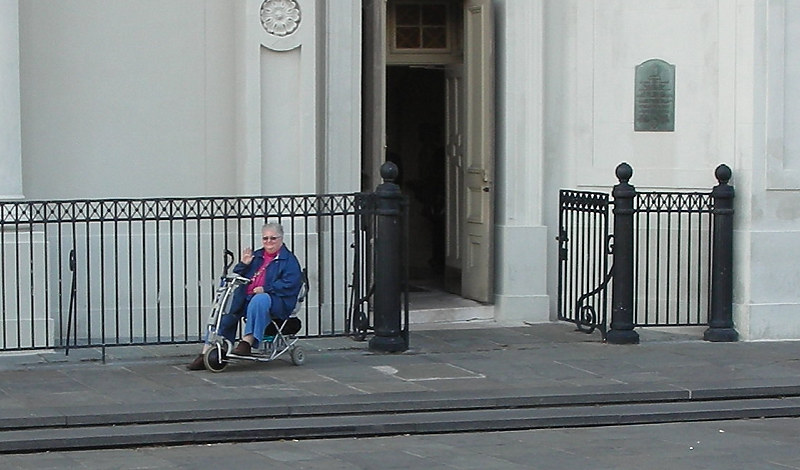

Johnnie and Oberta Baker's Photo Album Gallery Previous Next
|

Obie in Jackson Square relaxing while Johnnie walks around photographing the square. Early New Orleans was originally centered around what was then called the Place d' Armes (Spanish: Plaza de Armas). After the Battle of New Orleans in 1814, it was renamed Jackson Square after General Andrew Jackson. |